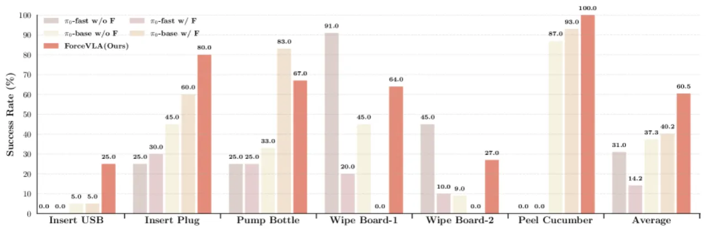
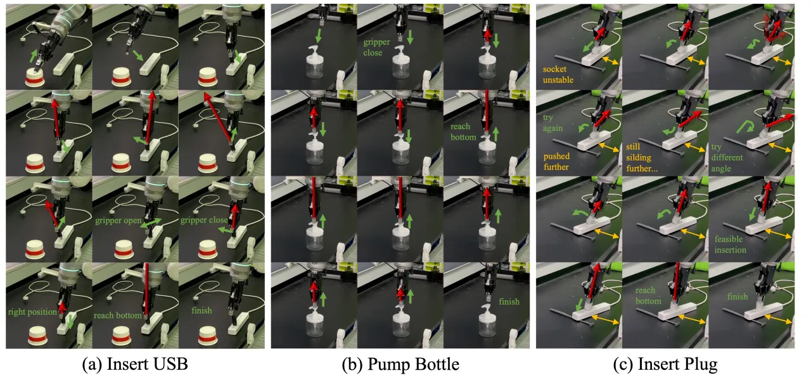

03 Experiments · 实验
在 5 个真实接触密集任务上评测：Bottle Pumping、Plug Insertion、USB Drive Insertion、Whiteboard Wiping、Cucumber Peeling。基线均从 SOTA 的 π0 架构派生：π0-base（w/o F 与 w/ F，力直接拼接到状态输入）以及对应的 π0-fast 变体。每任务约 50 条专家演示训练；插入/按压任务各 20 次、擦白板 10 次、削黄瓜 15 次试验评测。
主结果（五任务平均成功率）
| Model | 平均成功率 | 说明 |
|---|---|---|
| π0-fast w/ F | 14.2% | 紧凑 token 空间被朴素力 token 扰乱 |
| π0-fast w/o F | 31.0% | — |
| π0-base w/o F | 37.3% | 标准 π0，无力输入 |
| π0-base w/ F | 40.2% | 力直接拼接，仅微弱提升 |
| ForceVLA (Ours) | 60.5% | 较 π0-base w/o F 提升 +23.2% |
关键结论："beyond the presence of force data, how it is integrated is critical to performance gains." 把原始力信号直接喂给 π0-base 只从 37.3% 涨到 40.2%，而 ForceVLA 借 FVLMoE 达到 60.5%——说明有效融合而非仅有力数据才是关键。

削黄瓜任务 (Cucumber Peeling)
| Model | Avg. Peel Length (cm) ↑ | Min. Strokes to Clean ↓ |
|---|---|---|
| π0-base w/o F | 10.27 | 14 |
| π0-base w/ F | 13.17 | 10 |
| ForceVLA (Ours) | 14.12 | 7 |
泛化能力 (Table 2)
在物体几何、插座高度、视觉遮挡、不稳定插座等扰动下评测。ForceVLA 平均 63.78%，明显领先。注意这里并非全面碾压：π0-fast w/o F 在 Height Gen. 上并列最好 (88.89%)，而 Unstable Socket 一列 ForceVLA 仅 20%，反而低于 π0-fast w/ F 的 30%。
| Model | Obj. Gen.1 | Obj. Gen.2 | Height Gen. | Visual Occ. | Unstable Socket | Average |
|---|---|---|---|---|---|---|
| π0-base w/o F | 48.0 | 10.0 | 66.67 | 60.0 | 10.0 | 38.93 |
| π0-base w/ F | 32.0 | 10.0 | 77.78 | 30.0 | 10.0 | 31.96 |
| π0-fast w/o F | 80.0 | 35.0 | 88.89 | 50.0 | 10.0 | 52.78 |
| π0-fast w/ F | 32.0 | 5.0 | 44.44 | 50.0 | 30.0 | 32.29 |
| ForceVLA (Ours) | 80.0 | 40.0 | 88.89 | 90.0 | 20.0 | 63.78 |

Ablations · 消融（插头插入任务成功率）
验证"力应在何时、以何种方式融入"这一核心设计。Early fusion 会严重损害性能：在 VLM 之前用 MoE 融合力 (MoE before VLM) 完全失败（0%）——改变预训练 VLM 的输入表征会破坏其学到的特征分布。晚期融合更好："concatenate after VLM" 达 60%，而 ForceVLA 用 FVLMoE 在 VLM 之后自适应融合达到 80%。
| Model | Success Rate |
|---|---|
| baseline (π0) | 45% |
| linear before VLM | 55% |
| MoE before VLM | 0% |
| concatenate after VLM | 60% |
| ForceVLA (Ours) | 80% |
路由分析（附录 C）：不同任务表现出不同的 expert 利用模式——insert plug / peel cucumber 有明显的阶段性专家分化，wipe board 则始终偏好单一专家；Expert 0 在多任务中占据近半 token，疑似充当"通用专家"负责多模态融合或共享控制原语。